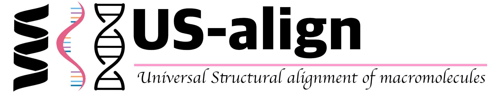

US-align (Universal Structural alignment) is a unified protocol to compare 3D structures of different macromolecules (proteins, RNAs and DNAs) in different forms (monomers, oligomers and heterocomplexes) for both pairwise and multiple structure alignments. The core alogrithm of US-align is extended from TM-align and generates optimal structural alignments by maximizing TM-score of compared strucures through heuristic dynamic programming iterations. Large-scale benchmark tests showed that US-align can generate more accurate structural alignments with significantly reduced CPU time, compared to the state-of-the-art methods developed for specific structural alignment tasks. TM-score has values in (0,1] with 1 indicating an identical structure match, where a TM-score ≥0.5 (or 0.45) means the structures share the same global topology for proteins (or RNAs).
US-align online webserver
Alignment of a pair of monomer (default of the US-align program). Only the first chain of each structure is considered. [View example for protein] [View example for RNA]
US-align standalone program download
- Click USalign.cpp
to download the single-file C++ source code of US-align.
You can compile the program in your Linux computer by
-
$ g++ -static -O3 -ffast-math -o USalign USalign.cpp
- Click USalignLinux64.zip, USalignWin64.zip USalignMac.tar.gz to download the 64 bit binary executable of US-align for Linux, Windows, or Mac OS, respectively. Nevertheless, you are recommended to download the US-align source code and compile it on your machine, which gives you higher speed to run the program.
- Learn about the usage of the US-align standalone program at the US-align help page,
- Learn how to use US-align to calculate TM-score of predicted model and the native at the /TM-score/help/,
References
- Chengxin Zhang, Lydia Freddolino, Yang Zhang (2025) "A graphic and command line protocol for quick and accurate comparisons of protein and nucleic acid structures with US-align." Nature Protocols, 21(2), 517-541. [PDF]
- Chengxin Zhang, Morgan Shine, Anna Marie Pyle, Yang Zhang (2022) "US-align: Universal Structure Alignment of Proteins, Nucleic Acids and Macromolecular Complexes." Nature Methods, 19: 1109-1115 [PDF] [Supporting information].
- Chengxin Zhang, Anna Marie Pyle, Yang Zhang (2022). "A unified approach to sequential and non-sequential structure alignment of proteins, RNAs and DNAs." iScience, 25: 105218. [PDF]